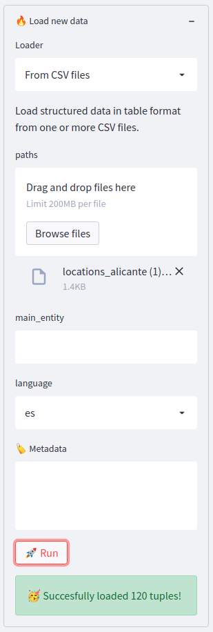
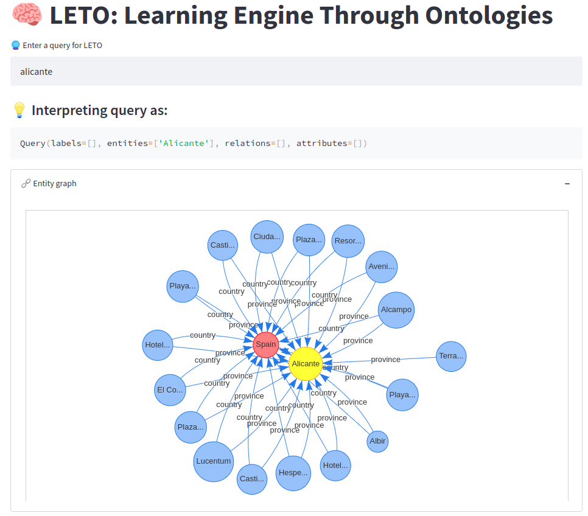
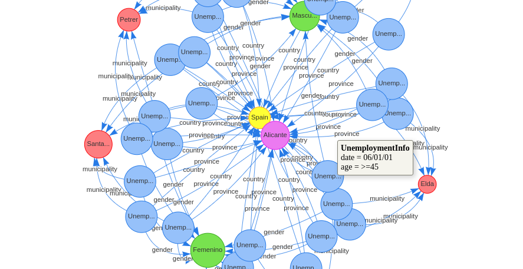
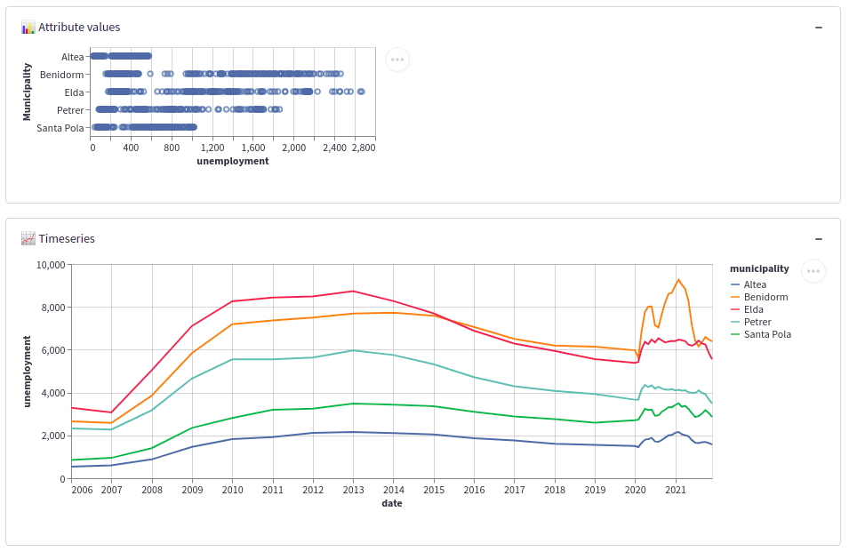

Welcome to LETO's Tutorial¶
This tutorial will guide you through the usage of LETO in a specific example domain. The domain in question is about the province of Alicante, Spain, and mostly related to tourism information.
Warning
Make sure to clear the database (button 💣 Clear database) before following this tutorial, so that you start from scratch.
Loading the first data set¶
The first data set we will analyze is related with some touristic locations in Alicante.
To begin, download the CSV file locations_alicante.csv here. If you open the file, you'll see something like the following:
location,lat,lon,country,province
Albir,38.570982499565076,-0.07026377183837483,Spain,Alicante
Alcampo,38.36708247502724,-0.4699022752090634,Spain,Alicante
Avenida Jovellanas,38.34789006276749,-0.4755058728788782,Spain,Alicante
Castillo de Alicante,38.349140160469716,-0.4780181728788511,Spain,Alicante
Castillo de Santa Bárbara,38.349140160469716,-0.4780181728788511,Spain,Alicante
Ciudad de la Luz,38.364444444444445,-0.43833333333333335,Spain,Alicante
El Corte Inglés,38.347524302739636,-0.48798528517226725,Spain,Alicante
...
This file contains structured information about some locations, including latitude and longitude. We'll feed LETO with this information to begin.
On the right side panel, under the 🔥 Load data panel, select the loader named From CSV files.
Click the Browse button and select the file you just downloaded (locations_alicante.csv).
Then hit 🚀 Run.
You should see a small green message at the bottom that says "Succesfully loaded...". This means the data was correctly loaded. Check the following image for reference:

Exploring the data¶
Now that we have some data, let's run some queries. Start by typing alicante into the query textbox and see what happens. You should see something like the following image:

This graph represents a small context around the entity Alicante, which is the most similar entity to our input query alicante. You can see there are some locations that are related with Alicante and Spain. You can zoom, move, and otherwise interact with the graph to better explore it. If you hover over any of the nodes you'll see some relevant metadata:

Scrolling down you'll find additional visualizations about the subgraph that's being displayed. For example, you'll see a pie chart with the distribution of the locations that exist in the graph:

Loading semi-structured data¶
Next, we want to enrich this information with another dataset, this time a CSV file that contains comments extracted from social media that mention some of the locations present in the graph. To do that, download the CSV file named comments_alicante.csv here. The file looks something like this:
comment:text,rating,date,likes,source,query:text,country
"Alicante sorprende por su buen clima...",5,2010-10-31,2,TripAdvisor,Alicante,Spain
"Estuvimos en Alicante. Hotel LA CITY...",5,2010-10-03,0,TripAdvisor,Alicante,Argentina
"El personal era realmente acogedor, ...",5,2010-12-04,3,TripAdvisor,Alicante,United Kingdom
The first column contains a natural language text with comments, and the rest are structured information. You'll notice that some columns are explicitely marked with a semantic tag (:text) to tell LETO how to treat these columns.
By default, LETO will try to infer if a column corresponds to an attribute, an entity, or a relation. To do so, it relies on some heuristics about the structure of the data. For example, columns that are unique short labels are taken as possible entity ids, while numbers and dates are taken as attributes. In this case, we are telling LETO to explicitly interpret comment and query as text rather than, say, an entity label.
We will this CSV as before using the 🔥 Load data panel but we will explicitely define a name for the type of entity that will be created. In this case, we want each row in this CSV to be associated with an entity of type Comment, so we set the value of main_entity to Comment, just like the following image (also, make sure there's only one CSV selected and that language is set to es):

Go ahead and hit 🚀 Run.
Exploring the new data¶
Immediately after loading the new data you'll notice that the same query alicante now returns a slightly different graph (your colors may vary):

You'll see new Comment nodes that represent each of the lines in the CSV, along with their associated metadata (such as rating and date). Furthermore, each Comment node is related with some of the existing locations via a mention relation. This is because LETO performs some smart natural language processing to detect entities in text fields (such as comment) and automatically creates the corresponding relations to the associated semantic entities.
To make it more interesting, type alicante mentions in the query box. This has the effect of showing the same graph, but now the locations are displayed in a map:

This happens because the query now identifies the mention relationship explicitely, and thus the entities participating in that relationship are subject to visualization, and they happen to have location information associated with them.
To make it even more interesting let's try to compare the ratings of comments by location. Write the following query, alicante ratings by location, and you should see something like the following:

The magic happening here is that LETO will scan the graph looking for an attribute called rating in an object related with something of type Location. Similarly, you can try alicante likes by location and you'll see a similar graph. You can even combine both queries in alicante ratings and likes by location and you'll see both graphs:

Adding time-indexed data¶
Next, we will add another CSV that contains time-indexed information. Download the file named tourism_spain.csv here and load it into LETO. Se the main_entity label to TourismInfo. The data looks something like this:
country,date,tourists
Spain,2020-12,648989
Spain,2020-11,456814
Spain,2020-10,1020773
Spain,2020-09,1138868
Now type spain in the query box to see what happens. The graph will look something like the following, to reflect the facts that we know about Spain, including the previous entities and a new set of TourismInfo nodes that represent the data in the new CSV:

Now type spain tourists by country and you should see a timeseries graph like the following:

The magic here happens because there's a date attribute on the TourismInfo node, and it's associated via a country relation with the entities you mention. By understanding how LETO interprets a query, we can tinker with the input to achieve more or less what we want.
Loading a large data set¶
Let's now load the file employment_alicante.csv located here, which also contains time-indexed information about unemployment in a sample of municipalities inside Alicante. Make sure to set the main_entity to UnemploymentInfo. The file looks something like this:
municipality:rel,province:rel,country:rel,age:attr,gender:rel,unemployment,date
Altea,Alicante,Spain,<25,Masculino,34.0,06/01/01
Altea,Alicante,Spain,25-44,Masculino,123.0,06/01/01
Altea,Alicante,Spain,>=45,Masculino,0.0,06/01/01
Altea,Alicante,Spain,<25,Femenino,87.0,06/01/01
Altea,Alicante,Spain,25-44,Femenino,41.0,06/01/01
Altea,Alicante,Spain,>=45,Femenino,257.0,06/01/01
Benidorm,Alicante,Spain,<25,Masculino,211.0,06/01/01
Benidorm,Alicante,Spain,25-44,Masculino,763.0,06/01/01
Benidorm,Alicante,Spain,>=45,Masculino,0.0,06/01/01
Benidorm,Alicante,Spain,<25,Femenino,479.0,06/01/01
Benidorm,Alicante,Spain,25-44,Femenino,172.0,06/01/01
Benidorm,Alicante,Spain,>=45,Femenino,1033.0,06/01/01
As you can see, there are several :rel annotations which indicate LETO that we want those columns to become explicit relations with an entity rather than simple attributes. Go ahead and load the data if you haven't. This is a bigger file which can take a couple minutes to fully digest.
Once loaded you'll see a bunch of new facts (around ~11K) have appeared in the ⚙️ Config panel. If you just type alicante in the query box you'll get a graph like the following:

Having this much data creates a couple of problems we'll have to deal with. First, if you just type alicante you'll never recover the comments, for example, because there's so much unemployment info that any subsample of the graph around Alicante is unlikely to have anything else.
To deal with this issue, you can type alicante ~unemploymentinfo to create a negative filter that will ignore all UnemploymentInfo nodes and give you back the old graph.
The second issue has to do with the size of the subgraph recovered. If you type alicante unemployment by municipality ~location you'll see that it selects some of the relevant data:

However, since LETO returns a subset of the graph, not necessarily all the data available will be included in the graph. To fix this, you can enter a larger number for the 🔮 Max results field in the ⚙️ Config panel. Enter 10000 to see how the whole of the data looks like:

The caveat is that with such a big graph, LETO will not show the graph representation.